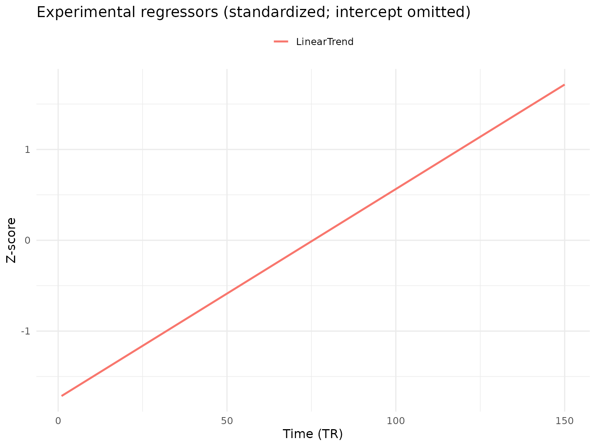
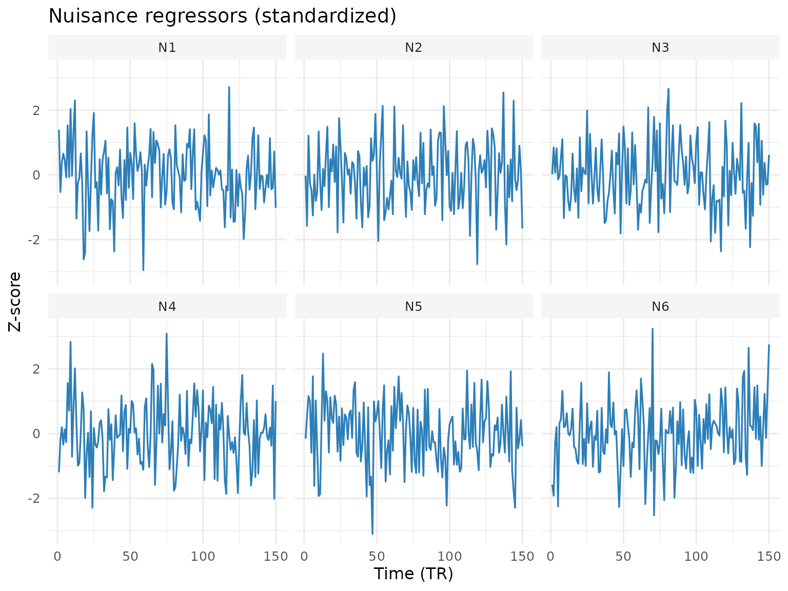
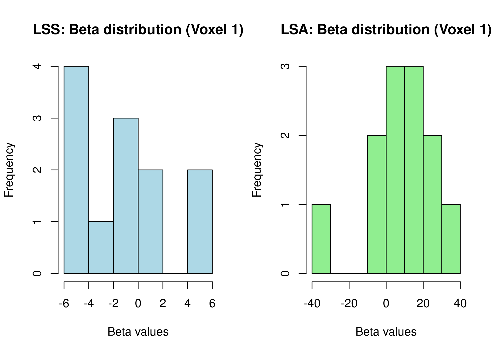

Getting Started with fmrilss
fmrilss Development Team
2025-09-15
getting_started.RmdThe Challenge of Event-Related fMRI Analysis
Imagine you’re analyzing an fMRI experiment where participants view different images in rapid succession, with only a few seconds between each stimulus. You want to estimate the brain’s response to each individual image, but there’s a problem: the hemodynamic response unfolds slowly over 10-15 seconds, causing responses from consecutive trials to overlap substantially. Traditional approaches that model all trials simultaneously in a single general linear model (GLM) can suffer from collinearity, especially when trials occur close together. This collinearity makes it difficult to obtain reliable, trial-specific activation estimates that are essential for techniques like multivariate pattern analysis (MVPA) or trial-by-trial connectivity analyses.
The Least Squares Separate (LSS) approach, introduced by Mumford and
colleagues in 2012, offers an elegant solution to this problem. Rather
than estimating all trials at once, LSS fits a separate GLM for each
trial, dramatically reducing collinearity and producing more reliable
trial-specific estimates. The fmrilss package brings you a
fast, flexible implementation of this powerful method, with modern
enhancements that make it practical for large-scale analyses.
Understanding the LSS Approach
Before diving into the implementation, let’s build an intuition for how LSS works. This vignette assumes you’re familiar with basic fMRI analysis concepts like the general linear model, design matrices, and the hemodynamic response function (HRF). You should also be comfortable with R programming and basic matrix operations, as we’ll be working with these throughout.
In a standard GLM analysis (often called Least Squares All or LSA), we create a design matrix with separate columns for each trial and estimate all beta coefficients simultaneously. When trials are closely spaced, these columns become highly correlated, leading to unstable estimates. LSS takes a different approach: for each trial of interest, it creates a simplified model with just two main regressors. The first regressor models the trial we’re currently interested in, while the second aggregates all other trials into a single regressor. This process repeats for every trial, yielding a unique, more stable beta estimate for each one.
Beyond these two core regressors, LSS models can include experimental regressors that capture session-wide effects like linear trends or block effects, which we want to model but don’t need trial-specific estimates for. The model can also incorporate nuisance regressors such as motion parameters or physiological noise, which are projected out before the analysis begins.
Your First LSS Analysis
library(fmrihrf)
#>
#> Attaching package: 'fmrihrf'
#> The following object is masked from 'package:stats':
#>
#> deriv
library(fmrilss)
set.seed(42)
n_timepoints <- 150
n_trials <- 12
n_voxels <- 25Let’s walk through a complete example that demonstrates the power of LSS. We’ll start by creating synthetic data that mimics a typical rapid event-related design, then compare different analysis approaches to see how LSS performs.
Creating the Experimental Design
The foundation of any fMRI analysis is the design matrix, which encodes when stimuli were presented and how we expect the brain to respond. In our example, we’ll simulate an experiment with trials occurring at regular intervals, which is common in many cognitive neuroscience studies.
# Trial design matrix (X)
X <- matrix(0, n_timepoints, n_trials)
# Ensure integer onsets within bounds
onsets <- round(seq(from = 10, to = n_timepoints - 12, length.out = n_trials))
for(i in 1:n_trials) {
X[onsets[i]:(onsets[i] + 5), i] <- 1
}
# Experimental regressors (Z) - intercept and condition effects
# These are regressors we want to model and get estimates for, but not trial-wise
Z <- cbind(Intercept = 1, LinearTrend = as.vector(scale(1:n_timepoints, center = TRUE, scale = FALSE)))
# Nuisance regressors - e.g., 6 motion parameters
Nuisance <- matrix(rnorm(n_timepoints * 6), n_timepoints, 6)The trial matrix X represents the expected BOLD response
for each trial, typically convolved with an HRF (though we’re using a
simplified box-car function here for clarity). The experimental
regressors in Z capture effects that vary across the
session but not trial-by-trial, such as baseline activation levels or
linear drift. The nuisance matrix contains signals we want to remove,
like head motion or breathing artifacts.
Visualizing Regressors
Before fitting models, it helps to quickly inspect the experimental
and nuisance regressors. Below are clean plots of the session‑wide
experimental effects (excluding the intercept) and the nuisance
regressors, standardized for comparability. If ggplot2 is
available, we use it for polished visuals; otherwise we fall back to
base R.

Single-Trial Regressors
A compact way to view the per‑trial regressors is as a heatmap (time × trial). This makes overlaps and spacing immediately visible.
Generating Realistic Data
Now we’ll create synthetic fMRI data that includes contributions from all these components, plus some noise to make it realistic:
# Simulate effects for each component
true_trial_betas <- matrix(rnorm(n_trials * n_voxels, 0, 1.2), n_trials, n_voxels)
true_fixed_effects <- matrix(rnorm(2 * n_voxels, c(5, -0.1), 0.5), 2, n_voxels)
true_nuisance_effects <- matrix(rnorm(6 * n_voxels, 0, 2), 6, n_voxels)
# Combine signals and add noise
Y <- (Z %*% true_fixed_effects) +
(X %*% true_trial_betas) +
(Nuisance %*% true_nuisance_effects) +
matrix(rnorm(n_timepoints * n_voxels, 0, 1), n_timepoints, n_voxels)Running the Analysis
The lss() function provides a clean, modern interface
that adapts to your needs. At its simplest, you can provide just the
data and trial matrix, and the function automatically includes an
intercept term:
For a more complete analysis that accounts for experimental effects
and removes nuisance signals, we include our Z and
Nuisance matrices. The function handles the nuisance
regression efficiently, projecting these signals out of both the data
and design matrix before estimating trial-specific betas:
Choosing the Right Computational Backend
The fmrilss package offers multiple computational
backends, each optimized for different scenarios. While the default R
implementation is well-optimized and readable, making it excellent for
understanding the algorithm and debugging, you’ll often want to use the
high-performance C++ backend for real analyses, especially with large
datasets. The C++ implementation leverages Armadillo for efficient
linear algebra and OpenMP for parallel processing across multiple CPU
cores:
# Run the same analysis with the high-performance C++ engine
beta_fast <- lss(Y, X, Z = Z, Nuisance = Nuisance, method = "cpp_optimized")
# The results are numerically identical to the R version
all.equal(beta_full, beta_fast, tolerance = 1e-8)
#> [1] TRUEThe beauty of this design is that you can seamlessly switch between backends without changing any other code, allowing you to use the readable R implementation during development and the optimized C++ version for production analyses.
LSS versus Traditional GLM: When Each Shines
To understand when LSS offers advantages over traditional approaches, let’s compare it with the standard Least Squares All (LSA) method that estimates all trials simultaneously:
# LSA: Standard GLM with all trials in one model
beta_lsa <- lsa(Y, X, Z = Z, Nuisance = Nuisance)
# Compare dimensions
cat("LSS beta dimensions:", dim(beta_full), "\n")
#> LSS beta dimensions: 12 25
cat("LSA beta dimensions:", dim(beta_lsa), "\n")
#> LSA beta dimensions: 12 25
# Compare variance in beta estimates
var_lss <- apply(beta_full, 2, var)
var_lsa <- apply(beta_lsa, 2, var)
cat("\nMean variance across voxels:\n")
#>
#> Mean variance across voxels:
cat(" LSS:", mean(var_lss), "\n")
#> LSS: 1.826826
cat(" LSA:", mean(var_lsa), "\n")
#> LSA: 4.297449
# Plot comparison
par(mfrow = c(1, 2))
hist(beta_full[, 1], main = "LSS: Beta distribution (Voxel 1)",
xlab = "Beta values", col = "lightblue")
hist(beta_lsa[, 1], main = "LSA: Beta distribution (Voxel 1)",
xlab = "Beta values", col = "lightgreen")
The comparison reveals important differences between the methods. LSS typically produces beta estimates with different variance characteristics than LSA, which can be advantageous for certain analyses. When should you choose one over the other?
For MVPA analyses, LSS generally performs better because it reduces collinearity between trial estimates, leading to more distinguishable patterns. In rapid event-related designs where hemodynamic responses overlap substantially, LSS’s approach of isolating each trial helps maintain estimate stability. However, for block designs with well-separated trials, or when you need to compute group-level contrasts that benefit from the stability of simultaneous estimation, LSA might be more appropriate. Connectivity analyses that require trial-specific estimates particularly benefit from LSS’s approach.
Introducing the OASIS Method
While the standard LSS implementation is powerful, the package also includes the OASIS (Optimized Analytic Single-pass Inverse Solution) method, which extends LSS with several sophisticated features. OASIS automatically estimates hemodynamic response functions, applies ridge regularization for enhanced stability, provides efficient computation for complex designs, and includes built-in support for multi-basis HRF models. Here’s a taste of what OASIS can do:
# Basic OASIS usage
# fmrihrf is now imported automatically
beta_oasis <- lss(
Y = Y,
X = NULL, # OASIS builds design internally
method = "oasis",
oasis = list(
design_spec = list(
sframe = sampling_frame(blocklens = nrow(Y), TR = 1),
cond = list(
onsets = onsets, # reuse onsets from above
hrf = HRF_SPMG1, # HRF model
span = 30
)
),
ridge_mode = "fractional",
ridge_x = 0.01,
ridge_b = 0.01
)
)
cat("OASIS beta dimensions:", dim(beta_oasis), "\n")
#> OASIS beta dimensions: 12 25We pass X = NULL together with a
design_spec so that OASIS can rebuild the trial-wise design
from the event description and HRF settings on every call. Internally
(see R/oasis_glue.R) the solver calls fmrihrf
to generate the appropriate basis for the requested HRF, apply
span/precision choices, and add any extra conditions before the
single-pass solve. This keeps the design in sync with changes to the HRF
(for example when running a grid search or switching to an FIR basis)
without requiring you to hand-maintain a matching matrix. If you already
have a fixed design matrix you can still provide it via X,
but the high-level design_spec path is the recommended
interface when the HRF is part of what you want OASIS to manage.
Working with Different Computational Backends
The package provides multiple backends to match your computational needs and resources. Each backend implements the same algorithm but with different optimization strategies. The naive implementation offers the clearest code for understanding the algorithm, while the vectorized and optimized R versions provide good performance with pure R code. For production work with large datasets, the C++ backend offers the best performance, especially when combined with parallel processing.
# Benchmark different methods
library(microbenchmark)
methods <- c("naive", "r_vectorized", "r_optimized", "cpp_optimized")
timings <- list()
for (m in methods) {
timings[[m]] <- system.time({
lss(Y, X, method = m)
})[3]
}
# Display timing comparison
timing_df <- data.frame(
Method = methods,
Time = unlist(timings)
)
print(timing_df)
# For large datasets, consider threading for C++ backends
if (require("parallel")) {
n_cores <- parallel::detectCores() - 1
# Set OpenMP threads for C++ backend if supported
Sys.setenv(OMP_NUM_THREADS = n_cores)
}Handling Complex Experimental Designs
Real experiments often involve multiple conditions, parametric
modulations, and various covariates. The fmrilss package
handles these complexities gracefully. When working with multiple
conditions, you can create separate design matrices for each condition
and include condition labels as experimental regressors. This allows you
to model condition-specific effects while still obtaining trial-wise
estimates within each condition.
# Create design with multiple conditions
n_cond <- 3
X_multi <- matrix(0, n_timepoints, n_trials * n_cond)
# Generate a simple HRF for demonstration
hrf <- c(0, 0.2, 0.5, 0.8, 1, 0.9, 0.7, 0.5, 0.3, 0.1)
for (c in 1:n_cond) {
trial_idx <- ((c-1) * n_trials + 1):(c * n_trials)
for (i in 1:n_trials) {
onset <- 10 + (trial_idx[i] - 1) * 5
if (onset + 9 <= n_timepoints) {
X_multi[onset:(onset + 9), trial_idx[i]] <- hrf
}
}
}
# Add condition labels as experimental regressors
Z_cond <- matrix(0, n_timepoints, n_cond)
for (c in 1:n_cond) {
trial_idx <- ((c-1) * n_trials + 1):(c * n_trials)
Z_cond[, c] <- rowSums(X_multi[, trial_idx, drop = FALSE])
}
# Run LSS with condition regressors
beta_multi <- lss(Y, X_multi, Z = Z_cond, method = "r_optimized")
#> Warning in .check_zero_regressors(X): Trial regressor 'Trial_28' appears to be
#> zero (norm = 0). This may cause numerical issues or NaN results.
#> Warning in .check_zero_regressors(X): Trial regressor 'Trial_29' appears to be
#> zero (norm = 0). This may cause numerical issues or NaN results.
#> Warning in .check_zero_regressors(X): Trial regressor 'Trial_30' appears to be
#> zero (norm = 0). This may cause numerical issues or NaN results.
#> Warning in .check_zero_regressors(X): Trial regressor 'Trial_31' appears to be
#> zero (norm = 0). This may cause numerical issues or NaN results.
#> Warning in .check_zero_regressors(X): Trial regressor 'Trial_32' appears to be
#> zero (norm = 0). This may cause numerical issues or NaN results.
#> Warning in .check_zero_regressors(X): Trial regressor 'Trial_33' appears to be
#> zero (norm = 0). This may cause numerical issues or NaN results.
#> Warning in .check_zero_regressors(X): Trial regressor 'Trial_34' appears to be
#> zero (norm = 0). This may cause numerical issues or NaN results.
#> Warning in .check_zero_regressors(X): Trial regressor 'Trial_35' appears to be
#> zero (norm = 0). This may cause numerical issues or NaN results.
#> Warning in .check_zero_regressors(X): Trial regressor 'Trial_36' appears to be
#> zero (norm = 0). This may cause numerical issues or NaN results.
#> Warning in .lss_engine_optimized(dset = dset, bdes = bdes, Y = Y, use_cpp =
#> use_cpp): No intercept detected in dmat_base. Consider adding one for proper
#> baseline modeling.Parametric modulations, where trial responses are weighted by continuous variables like reaction time or stimulus intensity, are also straightforward to implement. For a quantitative demo, we simulate a parametric effect in the data and show recovery with and without the modulator:
# Add parametric modulator (e.g., reaction time, stimulus intensity)
modulator <- scale(rnorm(n_trials, mean = 0, sd = 1), center = TRUE, scale = FALSE)
# Create parametrically modulated design (scale each trial by its modulator)
X_param <- sweep(X, 2, as.numeric(modulator), `*`)
# Simulate data with a parametric effect (reuse fixed and nuisance parts)
Y_mod <- (Z %*% true_fixed_effects) +
(X_param %*% true_trial_betas) +
(Nuisance %*% true_nuisance_effects) +
matrix(rnorm(n_timepoints * n_voxels, 0, 1), n_timepoints, n_voxels)
# Fit models with and without the parametric modulator
beta_unmod <- lss(Y_mod, X, Z = Z, method = "r_optimized")
beta_param <- lss(Y_mod, X_param, Z = Z, method = "r_optimized")
# Ground truths for comparison
# - For unmodulated design X, the true coefficients are modulator * true_trial_betas
true_unmod_coefs <- sweep(true_trial_betas, 1, as.numeric(modulator), `*`)
# - For parametrically modulated design X_param, the true coefficients are true_trial_betas
cor_unmod <- cor(as.vector(beta_unmod), as.vector(true_unmod_coefs))
cor_param <- cor(as.vector(beta_param), as.vector(true_trial_betas))
cat("Correlation with true coefficients (parametric effect simulated):\n")
#> Correlation with true coefficients (parametric effect simulated):
cat(" Using X (no modulator):\t", round(cor_unmod, 3), "\n")
#> Using X (no modulator): 0.532
cat(" Using X_param (with modulator):", round(cor_param, 3), "\n")
#> Using X_param (with modulator): 0.37Optimizing Performance for Large-Scale Analyses
When working with whole-brain data containing hundreds of thousands of voxels, memory management and computational efficiency become critical. The package provides several strategies for handling large datasets effectively.
For very large datasets that exceed available memory, you can process voxels in chunks. This approach maintains reasonable memory usage while still benefiting from vectorized operations within each chunk:
# For very large datasets, process in chunks
chunk_size <- 1000
n_chunks <- ceiling(ncol(Y) / chunk_size)
beta_chunks <- list()
for (chunk in 1:n_chunks) {
voxel_idx <- ((chunk - 1) * chunk_size + 1):min(chunk * chunk_size, ncol(Y))
beta_chunks[[chunk]] <- lss(Y[, voxel_idx], X, method = "cpp_optimized")
}
# Combine results
beta_full <- do.call(cbind, beta_chunks)Another optimization strategy involves preprocessing your data to remove nuisance signals before running LSS. While LSS can handle nuisance regressors internally, preprocessing can be more efficient when running multiple analyses:
# Project out nuisance before LSS (when appropriate)
# project_confounds returns the projection matrix Q; apply it to both Y and X
Q_nuis <- project_confounds(Nuisance)
Y_clean <- Q_nuis %*% Y
X_clean <- Q_nuis %*% X
# This can be faster than including Nuisance in each LSS iteration
beta_preprocessed <- lss(Y_clean, X_clean, Z = Z, method = "r_optimized")Choosing the right backend for your data size is crucial for optimal performance. Based on the synthetic benchmarks in the OASIS vignette, the optimized R and fused C++ implementations perform almost identically for small-to-medium problems (hundreds of trials, up to a few thousand voxels); the C++ path pulls slightly ahead once the voxel count grows into the tens of thousands. OASIS stays in the same ballpark for these workloads, but you typically reach for it when you also want its HRF-aware features (automatic design construction, ridge, FIR support, grid search) rather than purely for speed, because those extras make the comparison less apples-to-apples. In practice pick the backend that matches the tooling you need (R for ease of debugging, C++ for maximum throughput, OASIS when you want the richer HRF workflow) and validate with a short benchmark on your own data.
Troubleshooting Common Challenges
Even with robust implementations, certain data characteristics can cause issues. Understanding how to diagnose and address these problems will help you get the most out of your analyses.
When design matrices become singular or near-singular due to high collinearity between regressors, standard least squares solutions become unstable. You can detect this by examining the correlation matrix of your design:
# Check for collinearity
cor_matrix <- cor(X)
high_cor <- which(abs(cor_matrix) > 0.9 & cor_matrix != 1, arr.ind = TRUE)
if (nrow(high_cor) > 0) {
warning("High correlation between regressors detected")
# Consider using ridge regression via OASIS
beta_ridge <- lss(Y, X, method = "oasis",
oasis = list(ridge_mode = "absolute", ridge_x = 0.1))
}Memory limitations can also pose challenges with large datasets. Before starting an analysis, it’s wise to estimate memory requirements and adjust your approach accordingly:
# Monitor memory usage
mem_required <- object.size(Y) * n_trials * 2 # Rough estimate
# mem_available <- memory.limit() # Windows only
# if (mem_required > mem_available * 0.8) {
# warning("May run out of memory. Consider chunking or using OASIS.")
# }If you encounter unexpectedly slow performance, profiling can help identify bottlenecks:
# Profile code to find bottlenecks
Rprof("lss_profile.out")
beta_slow <- lss(Y, X, method = "naive")
Rprof(NULL)
summaryRprof("lss_profile.out")Where to Go From Here
This vignette has introduced you to the core concepts and
capabilities of the fmrilss package. You’ve learned how LSS
addresses the collinearity problem in rapid event-related designs, how
to choose between different computational backends, and strategies for
handling complex experimental designs and large datasets.
To deepen your understanding and explore advanced features, we recommend examining the voxel-wise HRF vignette, which demonstrates how to model spatial variation in hemodynamic responses across the brain. The OASIS method vignette provides comprehensive coverage of this powerful extension, including HRF estimation and ridge regression techniques. For those interested in hierarchical analyses, the mixed models vignette shows how to combine LSS with mixed-effects modeling frameworks.
The fmrilss package represents a comprehensive toolkit
for trial-wise beta estimation, providing options that range from
simple, interpretable implementations to highly optimized solutions for
large-scale analyses. Whether you’re conducting exploratory analyses on
a laptop or processing massive datasets on a computing cluster, the
package offers the flexibility and performance you need for modern fMRI
analysis.